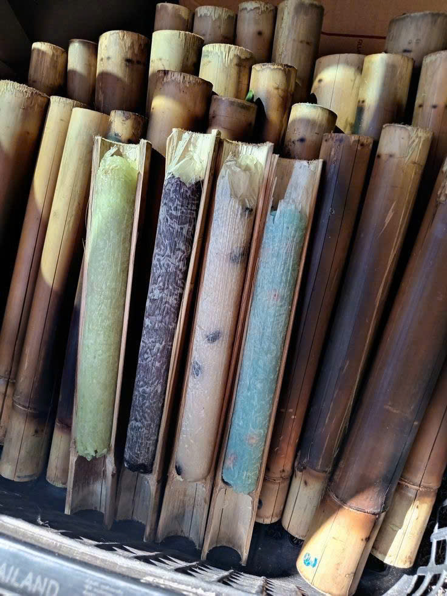
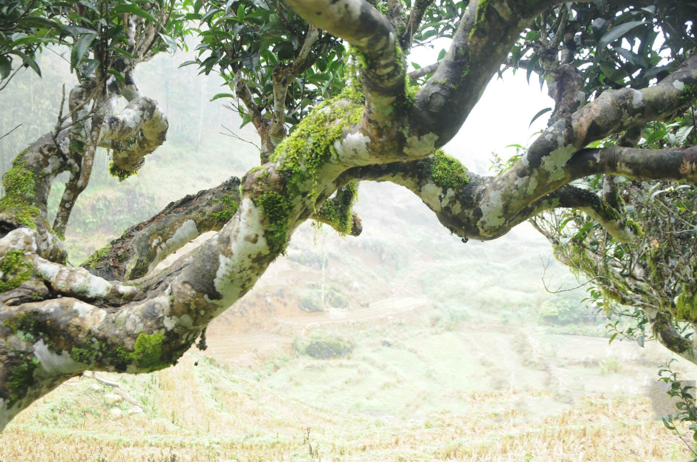
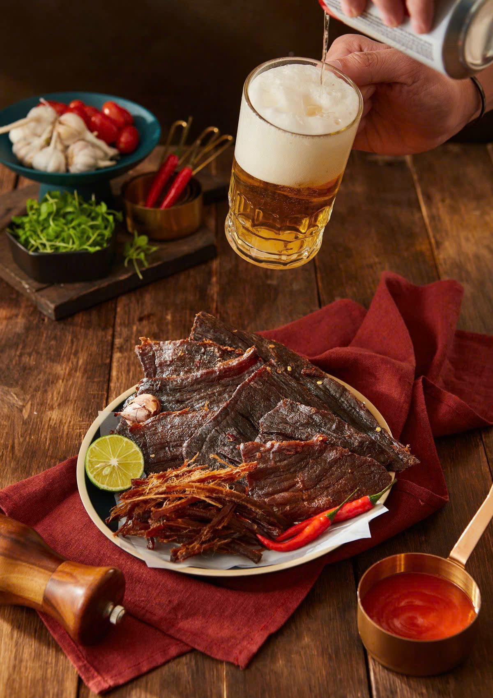
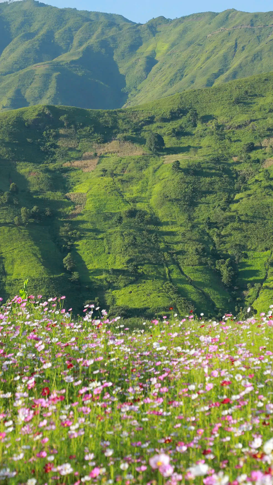

Ẩm thực



Ẩm thực Tà Xùa không chỉ là món ăn, mà là bản giao hưởng giữa hương vị núi rừng hoang sơ và nét văn hóa mộc mạc của đồng bào vùng cao.
- Hương vị vùng cao: Những hạt ngọc cơm lam dẻo thơm quyện cùng vị đậm đà của thịt gác bếp vắt ngang khói bếp than hồng, hay bát thắng cố nghi ngút khói, tất cả tạo nên một trải nghiệm vị giác đầy bản năng và nồng hậu.
- Món quà từ đất mẹ: Từng nguyên liệu đều được chắt lọc từ nông sản địa phương, chế biến theo phương thức thủ công truyền thống, giữ trọn vẹn sự tinh khôi và ngọt lành của thiên nhiên.
- Di sản trà Shan Tuyết: Nhắc đến Tà Xùa là nhắc đến những gốc trà Shan Tuyết cổ thụ hàng trăm năm tuổi. Những búp trà thấm đẫm sương mây, khi pha cho sắc nước vàng óng, vị chát thanh và hậu ngọt sâu lắng, là kết tinh của khí hậu quanh năm mờ ảo.
- Nét đẹp văn hóa: Cách người dân nơi đây gửi gắm tâm tình vào từng món ăn đã tạo nên một dấu ấn văn hóa ẩm thực riêng biệt—giản dị, khiêm nhường nhưng vô cùng quyến rũ.
Các địa điểm du lịch nổi tiếng

Không chỉ là một điểm đến, Tà Xùa là hành trình của những kẻ mộng mơ đi tìm sự tĩnh lặng giữa đại ngàn. Dưới đây là những điểm dừng chân bạn không thể bỏ lỡ:
- Sống lưng Khủng Long (Háng Đồng): "Đặc sản" kịch tính nhất của Tà Xùa. Con đường mòn nhỏ xíu chạy dọc sống núi hiên ngang giữa mây trời, nơi bạn có thể cảm nhận rõ rệt sự kỳ vĩ của tạo hóa và thử thách bản lĩnh chinh phục.
- Thiên đường "Săn mây": Một trải nghiệm mang tính may rủi nhưng đầy mê hoặc. Khi bình minh lên, cả thung lũng chìm trong biển mây trắng bồng bềnh như sóng đại dương, biến Tà Xùa thành một ốc đảo lơ lửng giữa hư không.
- Cây Cô Đơn: Đứng lặng lẽ giữa không gian bao la, hướng tầm mắt ra dòng sông Công thơ mộng, cái cây này là biểu tượng của sự bình yên và tự tại. Đây là góc trú ẩn hoàn hảo cho những tâm hồn đang tìm kiếm sự tĩnh tại.
- Đỉnh Gió – Bản giao hưởng của đất trời: Điểm dừng chân lý tưởng để thu vào tầm mắt trọn vẹn sự trùng điệp của núi non Tây Bắc. Tại đây, gió thổi mây bay, tạo nên một khung cảnh ngoạn mục làm say lòng bất cứ nhiếp ảnh gia nào.